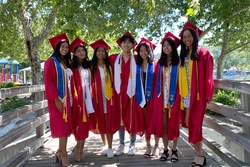

Paolina Ochoa
I am a poltical Science Major. I am a second-year student at UCR, and I have worked with several organizations on campus. I have worked with the basic needs program to collect food for the homeless and package meals. I am part of the Legal Advocacy Committee with UCR External Affairs. In government relations at UCR, we work with several different legislators to help pass bills for the better of students all around California. We lobby for a better future for all students, we recently helped pass the middle-class scholarship which allowed students of the middle class and low income to receive more money for their higher education. We are currently trying to pass more bills such as menstrual equity and health care for all California residents. I have gained experience through the Legal Advocacy Committee lobbying for students and California residents which has now become something I am passionate about. The new policies being passed and enforced are making the world a scary place, and so I lobby for the betterment of students to provide more access to education and opportunity.
I have also worked at A. Gary Anderson Graduate School of Management at UCR for a year and a half. At AGSM, I work with graduate students on a daily to help answer any questions they may have. My main job is to be at the front desk to assist students with questions and staff with projects. I have worked on several different projects with AGSM that have helped me gain leadership skills and creative skills. One of the many tasks that I do is creating flyers for business school events, sending out emails, and doing data analysis. There are times when other higher staff members are too busy to help the graduate students and that is when I can come in and assist them to the best of my ability. Many times, I simply take the initiative to walk a student to their class or professor’s office because they are lost. At any job or task that I do, I always complete the task with everything in me. My favorite part about working at AGSM is working with graduate students because I learn so much from them. We have many international students here at AGSM, and I have become friends with many of them. They teach me so much about their different cultures and life lessons. I love learning about other cultures we have today and I think it is very important for people to learn about other cultures as well. With these new international friends, I have taken them to cities around California to experience life here. I have even taken some of my international friends to my home so that they feel that they too have family here because their families are far away. In my time at UCR, I want to make sure to help make other students' education both memorable and remarkable.
One issue UCR residents may face living on campus is feeling homesick. This an issue I faced my freshman year on campus, and I am sure others do as well. Although for many students, their home isn’t close to UCR so it is important to help create a second home at UCR. I know my RA from last year did their best job to build a community for us and to feel at home. I also want to do the same for other fellow students. It is very important that they feel comfortable where they live. What I would do differently is hold biweekly events where students can come to release their stress from school or any other issues. I want to make sure that students feel comfortable reaching out to me for anything they may need help with. With these events planned, it would also help students to get to know each other better so that they feel that they have a community perhaps another home.
Another issue students may face living on campus is having the feeling of being alone. I know from experience that it can be scary to come to college without knowing anyone. College for many is a new start and can be hard to break out of your comfort zone. A way to resolve this problem or make it easier for students is to interact with their resident hallmates by facilitating activities such as game nights. During my freshman year, I did not see much of this and I would like to provide more activities among the hall and dorm residents. I would like to see more activities with just the hall first because that way students have more opportunities to get connected.
It is of the utmost importance for students to feel safe living in campus housing. What it means to feel safe and included in on-campus housing are many things such as inclusivity in the residential housing, a strong sense of community, and compassion for others. I currently live with multiple international students. I love living with them because they teach me so much. Their time here at UCR and in the U.S. was difficult at first to adjust to, but I always remind them that they worked hard to be here.
I am very compassionate towards my international friends because many do not have any relatives here in the states. I have opened my home to them during the holidays because they deserve to feel the love of family. Sometimes when I go back home I bring them with me as well because they are part of my family now. Not only do my international friends not have family here but they also have the struggle of adjusting to living in the U.S. The culture here is definitely different compared to other countries. One thing the U.S.A. is known for is fast food so I introduced them to pizza nights. So what I do is plan weekly pizza nights because that is what I did growing up with my family. With our pizza nights were have become very close and comfortable with each other because pizza night allows us to get to know each other.
We sit down every week and enjoy dinner together from one of our cultures. We like to try new foods because we get to learn about each other and our countries. My goal is to always make sure to go above and beyond when people are under my care.
I am a second-year student at UCR, and I have worked with several organizations on campus. I have worked with the basic needs program to collect food for the homeless and package meals. I am part of the Legal Advocacy Committee with UCR External Affairs. In government relations at UCR, we work with several different legislators to help pass bills for the better of students all around California. We lobby for a better future for all students, we recently helped pass the middle-class scholarship which allowed students of the middle class and low income to receive more money for their higher education. We are currently trying to pass more bills such as menstrual equity and health care for all California residents. I have gained experience through the Legal Advocacy Committee lobbying for students and California residents which has now become something I am passionate about. The new policies being passed and enforced are making the world a scary place, and so I lobby for the betterment of students to provide more access to education and opportunity.
I have also worked at A. Gary Anderson Graduate School of Management at UCR for a year and a half. At AGSM, I work with graduate students on a daily to help answer any questions they may have. My main job is to be at the front desk to assist students with questions and staff with projects. I have worked on several different projects with AGSM that have helped me gain leadership skills and creative skills. One of the many tasks that I do is creating flyers for business school events, sending out emails, and doing data analysis. There are times when other higher staff members are too busy to help the graduate students and that is when I can come in and assist them to the best of my ability. Many times, I simply take the initiative to walk a student to their class or professor’s office because they are lost. At any job or task that I do, I always complete the task with everything in me. My favorite part about working at AGSM is working with graduate students because I learn so much from them. We have many international students here at AGSM, and I have become friends with many of them. They teach me so much about their different cultures and life lessons. I love learning about other cultures we have today and I think it is very important for people to learn about other cultures as well. With these new international friends, I have taken them to cities around California to experience life here. I have even taken some of my international friends to my home so that they feel that they too have family here because their families are far away. In my time at UCR, I want to make sure to help make other students' education both memorable and remarkable.
2.One issue UCR residents may face living on campus is feeling homesick. This an issue I faced my freshman year on campus, and I am sure others do as well. Although for many students, their home isn’t close to UCR so it is important to help create a second home at UCR. I know my RA from last year did their best job to build a community for us and to feel at home. I also want to do the same for other fellow students. It is very important that they feel comfortable where they live. What I would do differently is hold biweekly events where students can come to release their stress from school or any other issues. I want to make sure that students feel comfortable reaching out to me for anything they may need help with. With these events planned, it would also help students to get to know each other better so that they feel that they have a community perhaps another home.
Another issue students may face living on campus is having the feeling of being alone. I know from experience that it can be scary to come to college without knowing anyone. College for many is a new start and can be hard to break out of your comfort zone. A way to resolve this problem or make it easier for students is to interact with their resident hallmates by facilitating activities such as game nights. D
Experience
Assistant
• Front Desk Asisstant at AGSM and CDC
• Hair Salon asisstant at Entourage Hair Salon
• Resident Assistant
Education
UC Riverside
University of California Riverside
University of California Riverside
Portfolio

.jpg)
.jpg)
.jpg)